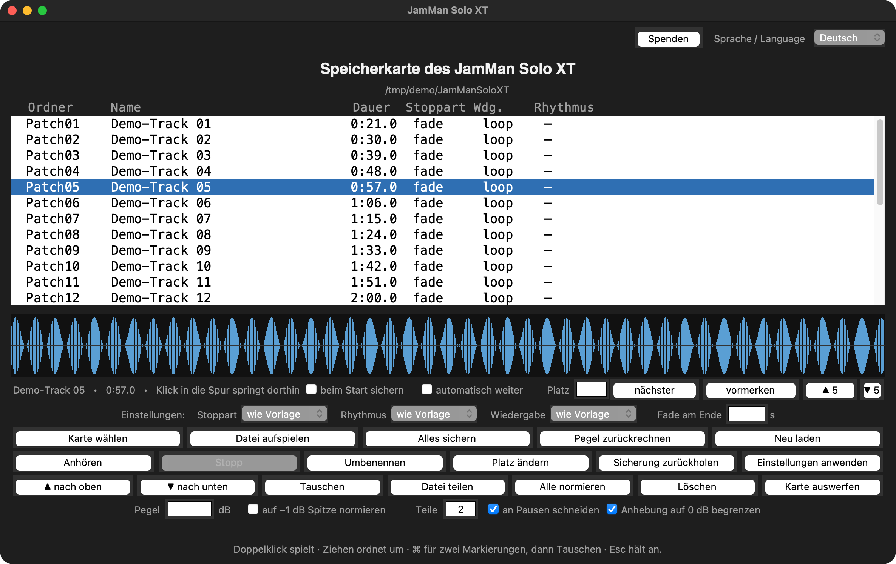

JamMan Solo XT am Mac, PC oder Linux verwalten
Ersatz für JamManager XT (DigiTech, 2012), das auf aktuellen macOS-Versionen abstürzt. Arbeitet direkt auf der Speicherkarte — ohne Treiber, ohne Installation, ohne Konto.

Das Problem
Der JamManager XT von DigiTech ist von 2012 und läuft auf macOS 14 und neuer nicht mehr — er stürzt beim Start ab. Damit lässt sich am Rechner nichts mehr sortieren, umbenennen oder sichern. Auf der Karte selbst liegt alles als WAV-Datei mit XML daneben; das ist lesbar, aber von Hand mühsam.
Was dieses Werkzeug kann
| Was | Wie |
|---|---|
| Patches ansehen und anhören | Liste mit Dauer, Stoppart, Wiedergabe, Rhythmus; Klick in die Wellenform springt an die Stelle |
| Nahtlos weiterhören | mehrere Patches als eine Datei — keine Lücke beim Übergang |
| Sortieren | Zeilen ziehen, ▲▼, Tauschen, auf einen freien Platz legen |
| Aufspielen | WAV direkt; MP3, M4A, FLAC, OGG über ffmpeg — auf 44,1 kHz / 16 Bit / Stereo gebracht |
| 10-Minuten-Grenze umgehen | lange Aufnahme an Pausen teilen, sample-genau, ohne Verlust |
| Pegel | normieren, anheben, mit 0-dBFS-Begrenzung |
| Sicherheit | vor jedem Eingriff wird gesichert; auf Wunsch beim Start, wenn sich die Karte geändert hat |
| Zurückholen | einzelne Patches oder die ganze Karte aus einer Sicherung |
Systeme
| System | Stand |
|---|---|
| macOS (Apple Silicon und Intel) | läuft, im Einsatz |
| Windows 10 | läuft |
| Linux (Ubuntu Studio) | läuft |
| Android | geht nicht — kein tkinter, Karte lässt sich nicht beschreiben |
Nötig ist nur Python 3 mit tkinter. Für MP3 und M4A zusätzlich
ffmpeg. Keine weiteren Pakete.
Sprachen
Deutsch, Englisch, Französisch, Spanisch, Chinesisch — im Fenster oben rechts
umschaltbar, oder mit --sprache auf der Kommandozeile.
Loslegen
git clone https://github.com/Suilui1/jamman-card-tool.git cd jamman-card-tool ./JamMan.command # macOS JamMan.bat # Windows ./JamMan.sh # Linux
Oder das ZIP von der Release-Seite nehmen und entpacken.
Kostenlos, aber nicht umsonst
Das Werkzeug ist kostenlos und bleibt es. Wer es nützlich findet, kann über PayPal etwas beitragen — auch mit Kreditkarte, ohne PayPal-Konto.